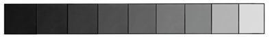
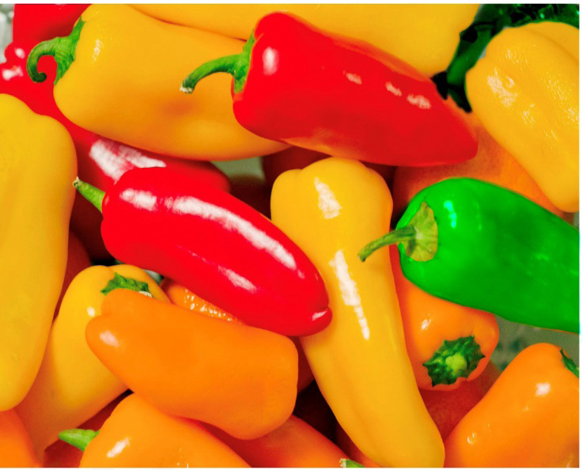

of light and dark tones.
Light affects how objects are seen and how lightness or darkness appears in an artwork.
Figure 1.36 shows a value scale.

Colour
This is an element of art resulting from the reflection of light on the surface of an object.
As an element of art, colours play a greater role in the expression of feelings and ideas by an artist in a work of art.
Figure 1.37 is an example of red, green and yellow colours in vegetables.

Texture
This is the surface quality of an object or the way an object’s surface feels.
In fine art, texture refers to rough or smooth visual quality.
Texture in art is categorised into two.
These are tactile or actual texture and visual or simulated texture.
Tactile or actual texture:
This is the real texture of an object which can be felt by physical contact.
For example, furs on the bodies of animals such as rabbits and raccoons feel soft while the surface of sandpaper feels rough when touched.
Figure 1.38 shows a picture of a rabbit with actual texture.